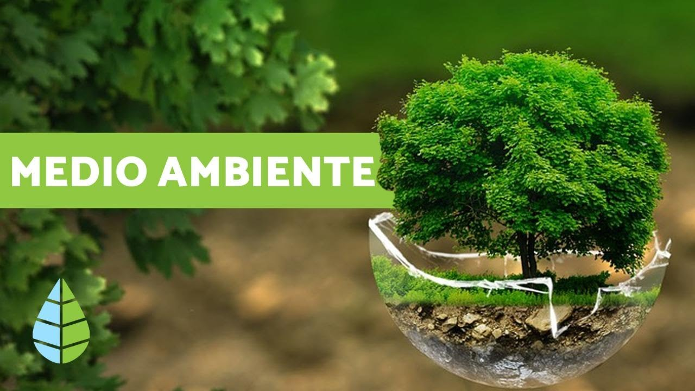

ir a la pagina2 ir a la pagina3 ir a la pagina4 ir a la pagina5
Medio ambiente
El medio ambiente es un sistema formado por elementos naturales y artificiales que están interrelacionados y que son
modificados por la acción humana.
Se trata del entorno que condiciona la forma de vida de la sociedad y que incluye valores naturales, sociales y culturales
que existen en un lugar y momento determinado.

¿Qué es el medio ambiente?
El medio ambiente es el conjunto de componentes físicos, químicos, biológicos, de las personas o de la sociedad en su conjunto.
Comprende el conjunto de valores naturales, sociales y culturales existentes en un lugar y en un momento determinado, que
influyen en la vida del ser humano y en las generaciones futuras. Es decir, no se trata solo del espacio en el que se desarrolla
la vida, sino que también comprende a los seres vivos, objetos, agua, suelo, aire y las relaciones entre ellos.
Por lo tanto, el medio ambiente es el área condicionada para la vida de diferentes seres vivos donde se incluyen elementos naturales,
sociales, así como también componentes naturales; como lo es el suelo, el agua y el aire ubicados en un lugar y en un momento específico.
Definición de medio ambiente
La definición de medio ambiente es el espacio en el que se desarrolla la vida de los seres vivos y que permite la interacción de los mismos.
Sin embargo este sistema no solo está conformado por seres vivos, sino también por elementos abióticos (sin vida) y por elementos artificiales.
Características del medio ambiente
- Organismos:
conjuntos de individuos de diferentes especies, tanto animales como vegetales, hacen lo propio hasta encontrar su espacio
y establecer poblaciones.
- Agua:
tanto la presencia como la ausencia de este líquido vital, es algo que afecta de manera directa el equilibrio del medio ambiente,
asimismo, corresponde a una sustancia clave para la subsistencia de los organismos.
- Aire:
a partir de la composición química de este elemento, es que se pueden identificar estados de contaminación. Por otra parte, este
puede llegar a influir en la calidad del oxígeno que participa en la respiración
- Temperatura:
esta magnitud que hace referencia al calor que se mide por medio de un termómetro, puede comprometer bastante el ambiente,
consiguiendo que el aire se pueda percibir frío o caliente. Puesto que algunos organismos únicamente sobreviven dentro de ciertos rangos de
temperatura, esta muchas veces puede ser sinónimo de deterioro.
- Accidentes geográficos:
se trata de los elementos que constituyen el relieve de una zona, por ejemplo, los valles y montañas.
- Organismos vivos:
Estos son pieza fundamental del medio ambiente, pues forman la acción directa en las alteraciones o mantenimiento de los
procesos ambientales.
Cuidado del medio ambiente
El cuidado del medio ambiente no ha de ser únicamente una preocupación de las empresas, también son los hogares los que han de poner su granito
de arena y ponerse cuanto antes manos a la obra para colaborar en el cuidado de nuestro entorno.
Las siguientes son acciones que recomendamos evitar para ayudar con el cuidado del medio ambiente:
- Consumir agua embotellada
- Usar menos el aire acondicionado
- Eliminar basura incorrectamente
- Usar el automóvil para todo
- Dejar conectados los aparatos elétricos
Por el contrario, las siguientes son acciones que recomendamos seguir para ayudar con el cuidado del medio ambiente:
- Crear un espacio verde en casa
- Separar la basura
- Consumir agua de garrafón
- Considerar energías renovables en casa
- Separar y reciclar la basura
- Usar el transporte público
Problemas del medio ambiente
Las causas que amenazan a nuestro planeta con un cambio radical en el ecosistema, se deben a lo siguiente elementos:
- Contaminación del agua dulce y de los mares:
provocada por la actividad industrial y las ciudades.
- Contaminación del aire:
procedente de la industria y los automóviles. La generación de gases de efecto invernadero representa un peligro de
calentamiento global que podría cambiar el clima a nivel planetario.
- Destrucción de la capa de ozono:
resultado de la emisión de ciertos gases industriales, la pérdida de esta capa atmosférica dejaría a la Tierra
sin protección contra las radiaciones solares.
- Destrucción de los bosques:
la pérdida de la vegetación natural, unida al calentamiento global, permite un rápido avance del desierto.
- Residuos urbanos:
la acumulación de basura es un grave problema de las ciudades modernas.
- Eliminación de la biodiversidad:
la pérdida de variedad biológica empobrece el ecosistema global y priva a la humanidad de importantes recursos.
Carteles del cuidado del medio ambiente
A continuación presentamos algunas ilustraciones encontradas en Pinterest alusivas al cuidado del medio ambiente y sus diversas problemáticas.
ir a la pagina2 ir a la pagina3 ir a la pagina4 ir a la pagina5